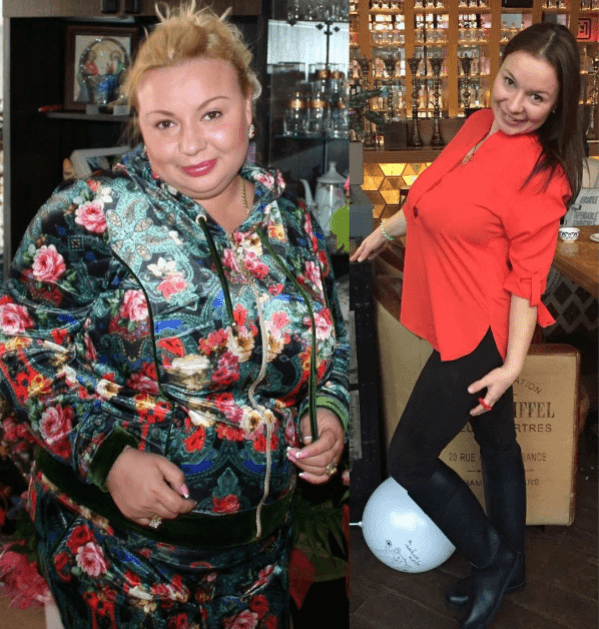

Ostatnio czytałem blog „pulchnej kobiety“ (jak siebie nazwała), w którym rozwodziła się nad tym, że rozmiar nie ma znaczenia, ponieważ najważniejszy jest urok osobisty. I wiecie co, nie mogę zbyć tego milczeniem!
Jestem pewien, że każda okrągła kobieta tak naprawdę jest niezadowolona ze swojej nadwagi, ale ukrywa to pod zuchwałymi stwierdzeniami typu: „kocham siebie taką, jaka jestem“, albo „jest mnie więcej do kochania“. Nie! Nie musicie być „takie, jakie jesteście“! Wierzcie mi, żaden facet nie lubi patrzeć na wielki, pękaty brzuch, ogromny tyłek i fałdy tłuszczu na bokach! A już na pewno nie chcieliby czegoś takiego dotykać...
Ale to może się zmienić! Chcę, by nasza historia była inspirującym przykładem dla innych.
5 lat temu ożeniłem się z miłości. Mieliśmy dobre życie, Zofia (moja żona) zajmowała się domem, a ja zarabiałem na życie. Miałem pokaźną wypłatę, więc często jeździliśmy na wakacje „all inclusive“. Cały czas jedliśmy na mieście. Zawsze stać nas było na zapraszanie znajomych na przyjęcia w domu, na których mnóstwo się jadło... W ten sposób Zofia przybierała na wadze, powoli, kilogram za kilogramem przez 2 lata. I nie mam tu na myśli 5, 10, czy nawet 20 kilogramów! Raz weszła na wagę, a ta wskazała ponad 100 kg ! Oczywiście popadła z tego powodu w depresję, ale zamiast zacząć się odchudzać, zaczęła pocieszać się jedzeniem lodów i ciasta. No i wiadomo, przybyło jej kolejne kilkadziesiąt kilogramów.
Pewnego razu odwiedzili nas starzy znajomi. Nie widzieliśmy ich już od jakiegoś czasu. Gdy zobaczyli Zofię, ja dostrzegłem horror w ich oczach. Później powiedzieli mi na osobności, że przy takiej wadze niemal nie da się schudnąć. „Jeśli nie chcesz spędzić życia z grubaską, lepiej odejdź teraz, zanim będzie za późno.“
Trudne początki
Po tej rozmowie nie przesypałem nocy. Z jednej strony, wiedziałem, że znajomi mieli pewnie rację. A z drugiej, jak mogłem tak po prostu zostawić żonę, którą naprawdę bardzo kochałem. Nie miałem pojęcia, co robić! Rano podjąłem decyzję: Nie byłbym w stanie od niej odejść i nie chciałem tego. Miałem zamiar spróbować stopniowo, w delikatny sposób przywrócić ją do normalności.
Oczywiście pierwsze co przyszło mi do głowy, to zdrowa dieta. Ale jak miałem zasugerować Zofii, że powinna przestać zamawiać skrzydełka z kurczaka, pizzę i żeberka oraz przejść na niskotłuszczowy serek i surowe warzywa? Wpadłem na pomysł, by gotować jej obiady „niespodzianki“. Kilka wieczorów spędziłem w internecie, przeglądając przepisy na diety niskokaloryczne. Zosia z całą pewnością nie jest głupia i natychmiast domyśliła się, o co chodziło. Grzecznie podziękowała za „niespodzianki“ i zjadła to, co dla niej ugotowałem ze łzami w oczach.
Minął tydzień. Nie wiem, czy to dlatego że moja żona wciąż pocieszała się jedzeniem podczas mojej nieobecności, czy po prostu dlatego, że ta metoda nie działa, ale nie było żadnych efektów . Dlatego zdecydowałem się sięgnąć po kolejny radykalny sposób na odchudzanie – sport . Ale w przeciwieństwie do obiadów „niespodzianek“, które wyglądały dość niewinnie, karnet na siłownię mógłby już być nieco obraźliwy.
Wówczas wpadłem na genialny pomysł. Kupiłem karnet na siłownię dla siebie i żony i poprosiłem znajomych, żeby dali je nam „w prezencie“ na święta. Wydawało mi się, że Zosia znów domyśliła się, że ten prezent wyszedł ode mnie. Ale udawała, że bardzo się cieszy i poszła ze mną na siłownię. Przez miesiąc 3 razy w tygodniu chodziliśmy na siłownię i naprawdę podobały mi się treningi, ale moja żona czuła się bardzo niezręcznie i widać było, że nie czerpie przyjemności z ćwiczeń, a efekcie – brak efektu...
Ostatnia próba
Kiedy Zofia przestała chodzić na siłownię, zamknęła się w domu i nigdzie nie wychodziła. Ciężko było na nią patrzeć, a któregoś dnia zasłyszałem jej rozmowę przez telefon, którą prowadziła z przyjaciółką. Moja żona płakała, że kocha mnie i zamierza odejść, żebym nie musiał cierpieć razem z nią. To był szok! To właśnie popchnęło mnie do podjęcia zdecydowanych działań.
Tego samego dnia jak tylko Zosia zasnęła, zacząłem szukać w internecie informacji na temat odchudzania na różnych forach. Miałem nadzieję odkryć metody, których jeszcze nie próbowaliśmy. I wówczas, po przeczytaniu setek wpisów na forach, znalazłem ten produkt!
Ten napój odchudzający nazywał się i pomógł już wielu kobietom. Patrząc na ich zdjęcia „przed“ i „po“, ledwo powstrzymałem się przed tym, by obudzić żonę i pokazać jej te fotki. Ale musiałem działać z pewną dozą ostrożności.
Osiągnęły swój cel (czyli schudły) – 2 tygodnie
Na stronie internetowej (a propos, jedynej oficjalnej stronie internetowej, gdzie sprzedawany jest ten napój) napisano, że powstał on na bazie naturalnych składników . Uznałem, że produkt nie wywoła żadnych szkód, biorąc pod uwagę fakt, że jest on całkowicie naturalny i ZAMÓWIŁEM go.
Zupełnie nowe życie
Uważam ten dzień za punkt zwrotny w naszym życiu! Na początku pododawałem Zosi ten napój w sekrecie jako po prostu pyszne kakao. Gdy zauważyłem kilka dni później, że kości policzkowe Zofii stały się mniej pulchne i zgubiła nieco tłuszczyku z brzucha, zasugerowałem, by piła , że to zwykłe kakao. I zadziałało! Gdy na własne oczy zobaczyłem, jak zmienia się jej ciało, zacząłem także dostrzegać, że moja żona ma coraz więcej energii i pewności siebie. Sądziła, że to „kakao“ wywoływało ten efekt.
Minęły 3 tygodnie, a Zosia zdecydowała się zważyć. Okazało się, że schudła 18 kg! Wtedy pomyślałem, że czas powiedzieć jej o . Ku mojemu zdziwieniu, nie obraziła się. Przeciwnie podziękowała mi i powiedziała, że sama nie byłaby w stanie osiągnąć takich efektów.
Po naszych szczerych wyznaniach, wszystko się zmieniło. Po pierwsze Zofia przestała się krępować, po drugie, patrzenie na nią sprawiało mi ogromną przyjemność, a po trzecie, nasz związek bardzo się umocnił. Żona piła przez kolejny miesiąc czy coś takiego. I w rezultacie w 7-8 tygodni schudła... 40 kg! Nie mogłem oderwać od niej wzroku, wyglądała tak ślicznie. Uświadomiłem sobie, że miałem rację, gdy postanowiłem ją wesprzeć, a nie opuścić. A teraz mogę cieszyć się z osiągniętych efektów.


Gdy waga mojej żony spadła do 70 kg, nagle przestała chudnąć. Na początku nie mogłem zrozumieć, o co chodziło. Ale okazało się, że Zosia była w ciąży! Pamiętam, że wtedy zakręciła mi się nawet łza w oku. Marzyliśmy o tym od kilku lat.
Oczywiście podczas ciąży moja żona przytyła kilka kilogramów, ale i tak była szczuplejsza niż rok temu. Poza tym jej waga wróciła do normy po porodzie. A co oboje nas cieszy, zbędne kilogramy nie wracają . Znów możemy pozwolić sobie na wizyty w restauracjach i uczty z przyjaciółmi. Zofia nie musi martwić się o dodatkowy kawałek pizzy czy gałkę lodów, bo teraz ma... my mamy . Wiemy, gdzie zamawiać, by uniknąć podróbek. I doskonale wiemy, jak skuteczny jest !
P.S. Zosia ma teraz idealną sylwetkę! Nie oczekiwałem nawet, że nadal będzie miała takie apetyczne krągłości po tym, jak schudła. Ma płaski brzuch, a piersi się nie zmieniły. Zazdroszczę sobie!
Tomasz Cholewiński